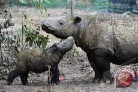
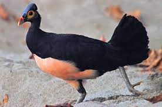
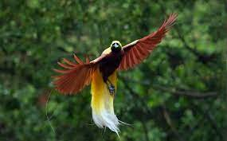

Hewan adalah makhluk hidup yang termasuk dalam kerajaan Animalia atau kingdom Animalia. Mereka
merupakan organisme multiseluler yang memiliki kemampuan untuk bergerak secara aktif, baik itu melalui
anggota tubuh seperti kaki, sayap, atau sirip, atau melalui alat gerak khusus seperti tentakel atau
ekor.Indonesia, sebagai negara kepulauan terbesar di dunia, memiliki keanekaragaman hayati yang sangat kaya.
Banyak hewan-hewan yang unik dan langka dapat ditemukan di berbagai pulau di Indonesia. Dari hutan hujan
tropis hingga terumbu karang, Indonesia menawarkan berbagai habitat yang mendukung kehidupan hewan yang
beragam.
Salah satu hewan yang terkenal di Indonesia adalah Orangutan. Orangutan adalah satwa endemik yang hanya
dapat ditemukan di pulau Sumatera dan Kalimantan. Mereka adalah primata terbesar di dunia dan menjadi simbol
konservasi alam Indonesia.
Selain itu, Harimau Sumatera juga merupakan spesies yang langka dan dilindungi di Indonesia. Harimau
Sumatera hidup di hutan-hutan Sumatera dan menjadi salah satu kucing besar terancam punah di dunia.
Indonesia juga terkenal dengan keanekaragaman burung. Salah satu contohnya adalah Cendrawasih, yang memiliki
bulu yang indah dan beragam warna. Burung ini banyak ditemui di Papua dan menjadi salah satu ikon kebanggaan
Indonesia.
Di perairan Indonesia, terdapat juga keanekaragaman hayati yang luar biasa. Misalnya, Ikan Napoleon atau
Humphead Wrasse, yang merupakan ikan karang terbesar di dunia. Ikan ini dapat ditemukan di berbagai perairan
Indonesia, terutama di Taman Nasional Bunaken dan Taman Nasional Komodo.
Hewan adalah organisme eukariotik multiseluler yang membentuk kerajaan biologi Animalia. Dengan sedikit
pengecualian, hewan mengonsumsi bahan organik, menghirup oksigen, dapat bergerak, bereproduksi secara
seksual, dan tumbuh dari bola sel yang berongga, blastula, selama fase perkembangan embrio. Lebih dari 1,5
juta spesies hewan yang masih hidup telah dideskripsikan—sekitar 1 juta di antaranya adalah serangga—tetapi
diperkirakan ada lebih dari 7 juta spesies hewan secara keseluruhan. Hewan memiliki panjang dari 8,5
mikrometer sampai 33,6 meter dan memiliki interaksi yang kompleks dengan satu sama lain dan dengan
lingkungannya, serta membentuk jaring-jaring makanan yang rumit. Studi tentang hewan disebut zoologi.
1. Komodo
 Komodo adalah hewan yang terkenal di Indonesia dan juga dikenal dengan sebutan "komodo dragon" atau
"biawak komodo". Berikut adalah beberapa informasi tentang komodo:
Komodo adalah hewan yang terkenal di Indonesia dan juga dikenal dengan sebutan "komodo dragon" atau
"biawak komodo". Berikut adalah beberapa informasi tentang komodo:
1. Deskripsi: Komodo adalah
spesies biawak terbesar di dunia. Mereka memiliki tubuh yang besar dan kuat, dengan panjang mencapai 2-3
meter dan berat mencapai 70-90 kg. Komodo memiliki kulit bersisik kasar, ekor panjang, dan gigi yang
tajam.
2. Habitat: Komodo hanya ditemukan di beberapa pulau di Indonesia, terutama di Pulau Komodo,
Rinca, Flores, Gili Motang, dan Padar. Mereka hidup di habitat alaminya berupa hutan tropis kering,
savana, dan wilayah pesisir.
3. Makanan: Komodo adalah predator yang kuat dan memangsa berbagai jenis
hewan, termasuk rusa, babi hutan, kuda, dan bahkan biawak kecil. Mereka menggunakan kecepatan dan
kekuatan mereka untuk menyerang dan membunuh mangsanya.
4. Perilaku: Komodo adalah hewan yang
teritorial dan soliter. Mereka cenderung menjaga wilayah mereka dan mempertahankan dominasi terhadap
komodo lainnya. Mereka juga memiliki kemampuan untuk berenang dan dapat melakukan perjalanan jarak jauh
untuk mencari makanan.
5. Konservasi: Komodo termasuk dalam daftar spesies yang dilindungi di
Indonesia dan dilindungi oleh undang-undang. Taman Nasional Komodo didirikan untuk melindungi habitat
dan populasi komodo. Organisasi dan institusi konservasi juga bekerja untuk menjaga keberlanjutan
spesies ini.
2. Harimau Sumatra

 Harimau Sumatra (Panthera tigris sumatrae) adalah salah satu subspesies harimau yang hidup di pulau
Sumatra, Indonesia. Berikut adalah beberapa informasi tentang harimau Sumatra:
Harimau Sumatra (Panthera tigris sumatrae) adalah salah satu subspesies harimau yang hidup di pulau
Sumatra, Indonesia. Berikut adalah beberapa informasi tentang harimau Sumatra:
1. Deskripsi: Harimau Sumatra adalah salah satu harimau terkecil di antara semua subspesies harimau.
Mereka memiliki tubuh yang ramping dan kekar, dengan panjang tubuh mencapai 2,2 - 2,6 meter dan tinggi
bahu sekitar 0,9 meter. Harimau jantan biasanya lebih besar daripada betina. Harimau Sumatra memiliki
bulu oranye kecokelatan dengan belang-belang hitam yang khas di seluruh tubuhnya.
2. Habitat: Harimau Sumatra hidup di hutan hujan tropis dan hutan rawa di pulau Sumatra. Mereka juga
bisa ditemukan di daerah pegunungan dan dataran rendah. Harimau Sumatra memiliki kisaran habitat yang
lebih kecil dibandingkan dengan subspesies harimau lainnya karena terbatasnya habitat yang tersedia.
3. Makanan: Harimau Sumatra adalah karnivora dan memangsa berbagai jenis hewan, seperti rusa, babi
hutan, monyet, dan burung. Mereka juga bisa memangsa hewan air seperti ikan dan buaya kecil jika ada
kesempatan.
4. Status Konservasi: Harimau Sumatra terancam punah dan masuk dalam kategori "Kritis" dalam Daftar
Merah IUCN. Populasi mereka terus menurun akibat perusakan habitat, perburuan ilegal, dan konflik dengan
manusia. Upaya konservasi dilakukan untuk menjaga keberlangsungan harimau Sumatra, termasuk pembentukan
taman nasional, patroli perlindungan, dan pendidikan masyarakat tentang pentingnya menjaga harimau
Sumatra dan habitatnya.
Harimau Sumatra merupakan salah satu hewan ikonik Indonesia yang perlu dilindungi untuk menjaga
keanekaragaman hayati dan ekosistem pulau Sumatra.
3. Badak Sulawesi


Badak Sulawesi, juga dikenal sebagai badak babi atau babirusa (Babyrousa celebensis), adalah spesies
badak langka yang endemik di pulau Sulawesi, Indonesia. Berikut adalah beberapa informasi tentang Badak
Sulawesi:
1. Deskripsi: Badak Sulawesi memiliki tubuh yang besar dengan panjang mencapai 1,1 - 1,8 meter dan
tinggi bahu sekitar 70-80 cm. Mereka memiliki kaki pendek dan kuat, serta ciri khas mereka adalah taring
yang melengkung yang terus tumbuh sepanjang hidupnya. Jantan memiliki taring yang lebih besar dan
melengkung lebih ekstrem daripada betina.
2. Habitat: Badak Sulawesi hidup di hutan-hutan dataran rendah, hutan rawa, dan daerah pesisir di pulau
Sulawesi. Mereka juga dapat ditemukan di daerah pegunungan dengan ketinggian hingga 1.500 meter di atas
permukaan laut.
3. Makanan: Badak Sulawesi adalah hewan omnivora, yang berarti mereka memakan berbagai jenis makanan.
Mereka sering memakan tumbuhan seperti akar, buah-buahan, dan daun-daunan. Namun, mereka juga dapat
memangsa serangga, cacing, dan kadang-kadang bangkai hewan.
4. Perilaku: Badak Sulawesi biasanya hidup dalam kelompok kecil yang terdiri dari beberapa betina dan
anak-anak mereka. Jantan lebih sering menjadi soliter dan cenderung bersaing satu sama lain untuk
mendapatkan betina dalam musim kawin. Mereka memiliki reputasi sebagai hewan yang pemberani dan agresif.
5. Status Konservasi: Badak Sulawesi termasuk dalam kategori "Rentan" dalam Daftar Merah IUCN. Populasi
mereka terus menurun akibat hilangnya habitat, perburuan ilegal, dan perangkap. Upaya konservasi
dilakukan untuk melindungi Badak Sulawesi, termasuk pembentukan taman nasional, patroli perlindungan,
dan edukasi masyarakat tentang pentingnya menjaga spesies ini.
Badak Sulawesi adalah salah satu hewan langka dan unik yang menjadi simbol keanekaragaman hayati di
Indonesia. Penting untuk melindungi dan melestarikan spesies ini agar mereka dapat terus bertahan dan
berkontribusi terhadap ekosistem pulau Sulawesi.
4. Orang Utan (Pongo)

 Orangutan adalah primata besar yang hidup di hutan-hutan tropis di pulau Borneo dan Sumatra, Indonesia.
Berikut adalah beberapa informasi tentang Orangutan:
Orangutan adalah primata besar yang hidup di hutan-hutan tropis di pulau Borneo dan Sumatra, Indonesia.
Berikut adalah beberapa informasi tentang Orangutan:
1. Deskripsi: Orangutan adalah primata terbesar di dunia, dengan berat antara 30 hingga 100 kilogram.
Mereka memiliki tubuh yang besar dan berotot, dengan lengan yang panjang. Orangutan jantan memiliki
ukuran tubuh yang lebih besar daripada betina. Mereka memiliki bulu merah cokelat yang tebal dan wajah
yang menonjol.
2. Habitat: Orangutan hidup di hutan hujan tropis dan hutan rawa di pulau Borneo dan Sumatra. Mereka
menghabiskan sebagian besar waktu mereka di pepohonan, menggunakan lengan yang kuat untuk bergerak di
antara cabang-cabang pohon. Orangutan memiliki wilayah berkelompok yang luas dan mencari makan di
berbagai tipe habitat hutan.
3. Makanan: Orangutan adalah hewan herbivora, dengan makanan utama mereka adalah buah-buahan. Namun,
mereka juga memakan daun, bunga, kulit kayu, dan kadang-kadang serangga. Mereka memiliki peran penting
dalam penyebaran biji-bijian dan regenerasi hutan melalui konsumsi dan penyebaran biji-bijian dalam
kotoran mereka.
4. Perilaku: Orangutan adalah hewan yang sangat cerdas dan memiliki kemampuan belajar yang tinggi.
Mereka tinggal dalam kelompok kecil yang terdiri dari satu betina dan anak-anaknya. Orangutan jantan
biasanya soliter dan memiliki wilayah yang luas yang mereka jaga dari jantan lainnya. Mereka menggunakan
alat-alat sederhana, seperti batang kayu atau daun, untuk mencari makanan.
5. Status Konservasi: Orangutan termasuk dalam kategori "Kritis" dalam Daftar Merah IUCN. Populasi
mereka terus menurun akibat hilangnya habitat, perburuan ilegal, dan perdagangan hewan liar. Upaya
konservasi dilakukan untuk melindungi Orangutan, termasuk pembentukan taman nasional, rehabilitasi hewan
yang terluka atau yatim, dan edukasi masyarakat tentang pentingnya menjaga spesies ini.
Orangutan adalah salah satu satwa yang ikonik dan penting di Indonesia. Kehadiran mereka dalam ekosistem
hutan hujan membantu menjaga keseimbangan alam dan keanekaragaman hayati. Penting untuk melindungi dan
melestarikan Orangutan agar mereka dapat terus bertahan dan hidup bebas di habitat alaminya.
5. Tarsius Kerdil (Tarsius Pumilus)
 Tarsius kerdil, juga dikenal sebagai tarsius Filipina atau Tarsius syrichta, adalah primata kecil yang
endemik di Kepulauan Filipina. Berikut adalah beberapa informasi tentang Tarsius Kerdil:
Tarsius kerdil, juga dikenal sebagai tarsius Filipina atau Tarsius syrichta, adalah primata kecil yang
endemik di Kepulauan Filipina. Berikut adalah beberapa informasi tentang Tarsius Kerdil:
1. Deskripsi: Tarsius kerdil adalah primata terkecil di dunia, dengan panjang tubuh sekitar 10 hingga 15
cm dan berat sekitar 80 hingga 160 gram. Mereka memiliki mata yang besar dan bulu berwarna cokelat
keabu-abuan. Salah satu ciri khas mereka adalah jari-jari yang sangat panjang, terutama jari ketiga
mereka yang dapat mencapai panjang dua kali lipat dari tubuh mereka.
2. Habitat: Tarsius kerdil hidup di hutan-hutan tropis dan hutan rawa di kepulauan Filipina. Mereka
menghabiskan sebagian besar waktu mereka di pepohonan, menggunakan kaki dan jari-jari panjang mereka
untuk melompat dari cabang ke cabang. Mereka juga memiliki kemampuan untuk berputar kepala hingga 180
derajat.
3. Makanan: Tarsius kerdil adalah hewan karnivora, meskipun mereka juga memakan serangga dan buah-buahan
kecil. Mereka memburu serangga seperti belalang, jangkrik, dan ngengat di malam hari. Tarsius kerdil
menggunakan pendengaran yang sangat baik untuk menangkap mangsa mereka.
4. Perilaku: Tarsius kerdil adalah hewan nokturnal, yang berarti mereka aktif pada malam hari. Mereka
hidup secara soliter atau dalam pasangan kecil. Mereka memiliki kemampuan melompat yang luar biasa,
dengan kemampuan melompat hingga 5 meter dari satu pohon ke pohon lainnya. Mereka juga memiliki
panggilan khas yang digunakan untuk berkomunikasi dengan sesama anggota kelompoknya.
5. Status Konservasi: Tarsius kerdil termasuk dalam kategori "Rentan" dalam Daftar Merah IUCN. Populasi
mereka terus menurun akibat hilangnya habitat, perburuan ilegal, dan perdagangan hewan liar. Upaya
konservasi dilakukan untuk melindungi Tarsius Kerdil, termasuk pembentukan taman nasional, rehabilitasi
hewan yang terluka atau yatim, dan edukasi masyarakat tentang pentingnya menjaga spesies ini.
Tarsius kerdil adalah primata yang unik dan penting dalam ekosistem kepulauan Filipina. Penting untuk
melindungi dan melestarikan spesies ini agar mereka dapat terus bertahan dan berkontribusi terhadap
keanekaragaman hayati di wilayah tersebut.
6. Gajah Kalimantan
 Gajah Kalimantan, juga dikenal sebagai gajah Borneo atau Elephas maximus borneensis, adalah subspesies
gajah Asia yang endemik di pulau Kalimantan, Indonesia. Berikut adalah beberapa informasi tentang Gajah
Kalimantan:
Gajah Kalimantan, juga dikenal sebagai gajah Borneo atau Elephas maximus borneensis, adalah subspesies
gajah Asia yang endemik di pulau Kalimantan, Indonesia. Berikut adalah beberapa informasi tentang Gajah
Kalimantan:
1. Deskripsi: Gajah Kalimantan adalah salah satu gajah terkecil di dunia, dengan tinggi rata-rata
sekitar 2,5 hingga 3 meter dan berat sekitar 2 hingga 4 ton. Mereka memiliki telinga yang besar dan bulu
yang jarang. Gajah Kalimantan jantan memiliki gading yang lebih kecil daripada gajah di daratan Asia.
2. Habitat: Gajah Kalimantan hidup di hutan-hutan hujan tropis dataran rendah dan rawa-rawa di pulau
Kalimantan. Mereka menghabiskan sebagian besar waktu mereka mencari makan dan bergerak di hutan,
menggunakan belalai mereka yang kuat untuk mencabut tumbuhan dan meminum air.
3. Makanan: Gajah Kalimantan adalah hewan herbivora, dengan makanan utama mereka adalah daun, buah, dan
batang pohon. Mereka dapat mengonsumsi hingga 150 kg makanan per hari. Gajah Kalimantan juga berperan
penting dalam penyebaran biji-bijian dan regenerasi hutan melalui konsumsi dan penyebaran biji-bijian
dalam kotoran mereka.
4. Perilaku: Gajah Kalimantan hidup dalam kelompok sosial yang terdiri dari beberapa betina dan
anak-anak mereka. Jantan biasanya hidup soliter atau dalam kelompok jantan yang lebih kecil. Mereka
memiliki tingkat kecerdasan yang tinggi dan mampu menggunakan alat-alat sederhana untuk mencari makan
atau mempertahankan diri.
5. Status Konservasi: Gajah Kalimantan termasuk dalam kategori "Kritis" dalam Daftar Merah IUCN.
Populasi mereka terus menurun akibat hilangnya habitat, perburuan ilegal, dan konflik dengan manusia.
Upaya konservasi dilakukan untuk melindungi Gajah Kalimantan, termasuk pembentukan taman nasional,
patroli perlindungan, dan edukasi masyarakat tentang pentingnya menjaga spesies ini.
Gajah Kalimantan adalah salah satu hewan ikonik dan penting di Indonesia. Kehadiran mereka dalam
ekosistem hutan hujan membantu menjaga keseimbangan alam dan keanekaragaman hayati. Penting untuk
melindungi dan melestarikan Gajah Kalimantan agar mereka dapat terus bertahan dan hidup bebas di habitat
alaminya.
7. Jalak Bali (Leucopsar Rothschildi)

 Jalak Bali, juga dikenal sebagai jalak putih (Leucopsar rothschildi), adalah burung langka yang endemik
di pulau Bali, Indonesia. Berikut adalah beberapa informasi tentang Jalak Bali:
Jalak Bali, juga dikenal sebagai jalak putih (Leucopsar rothschildi), adalah burung langka yang endemik
di pulau Bali, Indonesia. Berikut adalah beberapa informasi tentang Jalak Bali:
1. Deskripsi: Jalak Bali memiliki ukuran tubuh yang sedang dengan panjang sekitar 25 hingga 28 cm.
Burung jantan dan betina memiliki penampilan yang serupa, dengan bulu putih yang mencolok dan paruh
berwarna kuning. Mereka memiliki mata berwarna biru dan cakar kaki yang kuat.
2. Habitat: Jalak Bali biasanya ditemukan di hutan-hutan dataran rendah, hutan mangrove, dan daerah
pertanian di pulau Bali. Mereka juga dapat ditemukan di sekitar pemukiman manusia. Jalak Bali memiliki
kemampuan adaptasi yang baik terhadap habitat yang terganggu oleh manusia.
3. Makanan: Jalak Bali adalah burung omnivora, yang berarti mereka memakan berbagai jenis makanan.
Mereka memakan buah-buahan, biji-bijian, serangga, dan kadang-kadang juga memakan nektar bunga. Jalak
Bali juga dikenal sebagai burung yang pandai meniru suara, termasuk suara manusia.
4. Perilaku: Jalak Bali adalah burung yang sosial dan sering terlihat hidup dalam kelompok yang terdiri
dari beberapa individu. Mereka berkomunikasi dengan menggunakan berbagai jenis panggilan dan suara.
Jalak Bali juga memiliki kemampuan yang baik dalam meniru suara dan suara manusia.
5. Status Konservasi: Jalak Bali termasuk dalam kategori "Terancam Punah" dalam Daftar Merah IUCN.
Populasi mereka terus menurun akibat hilangnya habitat, perdagangan ilegal, dan perburuan. Upaya
konservasi dilakukan untuk melindungi Jalak Bali, termasuk program pemuliaan di penangkaran, pemulihan
habitat, dan patroli perlindungan.
Jalak Bali adalah salah satu burung endemik yang langka dan unik di Indonesia. Penting untuk melindungi
dan melestarikan spesies ini agar mereka dapat terus bertahan dan berkontribusi terhadap keanekaragaman
hayati di pulau Bali.
8. Burung Maleo (Macrocephalon Maleo)


Burung Maleo (Macrocephalon maleo) adalah spesies burung endemik yang ditemukan di Sulawesi, Indonesia.
Berikut adalah beberapa informasi tentang burung Maleo:
1. Deskripsi: Burung Maleo memiliki ukuran tubuh sedang dengan panjang sekitar 55 hingga 60 cm. Burung
jantan dan betina memiliki penampilan yang serupa, dengan bulu berwarna cokelat kemerahan dan bulu ekor
yang panjang. Mereka memiliki paruh yang kuat dan kaki yang besar.
2. Habitat: Burung Maleo biasanya ditemukan di hutan hujan dataran rendah dan hutan pegunungan di
Sulawesi. Mereka membangun sarang dan bertelur di area pasir vulkanik yang panas dan lembab, seperti di
dekat sumber air panas atau kawah gunung berapi yang mati.
3. Kebiasaan Makan: Burung Maleo adalah burung omnivora, yang berarti mereka memakan berbagai jenis
makanan. Mereka memakan buah-buahan, biji-bijian, serangga, cacing, dan kadang-kadang juga memakan
bangkai hewan. Mereka juga memiliki peran penting dalam penyebaran biji-bijian dalam ekosistem hutan.
4. Kebiasaan Berkembang Biak: Burung Maleo memiliki kebiasaan berkembang biak yang unik. Mereka tidak
mengerami telur mereka seperti burung lainnya. Sebaliknya, mereka menguburkan telur mereka di dalam
pasir vulkanik yang hangat dan lembab. Panas alami dari pasir tersebut membantu dalam proses penetasan
telur. Setelah menetas, anak burung Maleo langsung mandiri dan mencari makan sendiri.
5. Status Konservasi: Burung Maleo termasuk dalam kategori "Rentan" dalam Daftar Merah IUCN. Populasi
mereka terus menurun akibat hilangnya habitat, perburuan ilegal, dan gangguan manusia. Upaya konservasi
dilakukan untuk melindungi Burung Maleo, termasuk pemantauan dan perlindungan sarang, serta peningkatan
kesadaran masyarakat tentang pentingnya menjaga spesies ini.
Burung Maleo adalah salah satu burung yang unik dan penting di Indonesia. Penting untuk melindungi dan
melestarikan spesies ini agar mereka dapat terus bertahan dan berkontribusi terhadap keanekaragaman
hayati di Sulawesi.
9. Monyet hitam Sulawesi (Macaca Nigra)

 Monyet hitam Sulawesi, juga dikenal sebagai monyet Sulawesi atau Celebes macaque (Macaca nigra), adalah
spesies monyet endemik yang ditemukan di pulau Sulawesi, Indonesia. Berikut adalah beberapa informasi
tentang monyet hitam Sulawesi:
Monyet hitam Sulawesi, juga dikenal sebagai monyet Sulawesi atau Celebes macaque (Macaca nigra), adalah
spesies monyet endemik yang ditemukan di pulau Sulawesi, Indonesia. Berikut adalah beberapa informasi
tentang monyet hitam Sulawesi:
1. Deskripsi: Monyet hitam Sulawesi adalah monyet berukuran sedang dengan panjang tubuh sekitar 50
hingga 60 cm dan berat sekitar 5 hingga 10 kg. Mereka memiliki bulu berwarna hitam pekat yang mencolok
dan wajah yang tidak berbulu dengan kulit berwarna hitam. Monyet jantan dan betina memiliki penampilan
yang serupa.
2. Habitat: Monyet hitam Sulawesi biasanya ditemukan di hutan-hutan dataran rendah dan pegunungan di
pulau Sulawesi. Mereka dapat hidup di berbagai tipe habitat, termasuk hutan primer, hutan sekunder, dan
daerah pertanian. Mereka juga sering ditemukan di sekitar pemukiman manusia.
3. Makanan: Monyet hitam Sulawesi adalah hewan omnivora, yang berarti mereka memakan berbagai jenis
makanan. Diet mereka terdiri dari buah-buahan, daun, bunga, kulit pohon, serangga, telur burung, dan
kadang-kadang juga kecil-kecilan. Mereka juga memiliki kebiasaan memakan tanah liat yang diyakini
membantu mengatasi racun dalam makanan mereka.
4. Perilaku: Monyet hitam Sulawesi hidup dalam kelompok sosial yang terdiri dari beberapa individu.
Kelompok ini dipimpin oleh satu jantan dominan. Mereka memiliki kecerdasan yang tinggi dan dapat
menggunakan alat-alat sederhana untuk mencari makan atau mempertahankan diri. Monyet hitam Sulawesi juga
terkenal dengan kemampuan mereka dalam mengolah makanan menggunakan alat-alat seperti batu atau kayu.
5. Status Konservasi: Monyet hitam Sulawesi termasuk dalam kategori "Terancam Kritis" dalam Daftar Merah
IUCN. Populasi mereka terus menurun akibat hilangnya habitat, perburuan ilegal, dan perdagangan hewan
liar. Upaya konservasi dilakukan untuk melindungi monyet hitam Sulawesi, termasuk pembentukan taman
nasional, patroli perlindungan, dan edukasi masyarakat tentang pentingnya menjaga spesies ini.
Monyet hitam Sulawesi adalah salah satu primata yang unik dan penting di Indonesia. Penting untuk
melindungi dan melestarikan spesies ini agar mereka dapat terus bertahan dan berkontribusi terhadap
keanekaragaman hayati di pulau Sulawesi.
10. Burung Cenderawasih (Paradisaeidae)

Burung cendrawasih, atau biasa disebut juga burung paradise, adalah kelompok burung yang terdiri dari
beberapa spesies yang ditemukan di wilayah Papua dan Kepulauan Maluku di Indonesia, serta beberapa
negara di Oseania. Berikut adalah beberapa informasi umum tentang burung cendrawasih:
1. Keindahan dan Varietas: Burung cendrawasih terkenal karena keindahan dan variasi bulu mereka. Setiap
spesies memiliki penampilan yang unik, dengan bulu-bulu yang berwarna cerah dan memiliki bentuk yang
khas. Beberapa spesies memiliki ekor yang panjang dan bulu-bulu yang menyerupai hiasan atau kain,
sementara yang lain memiliki bulu berwarna-warni dengan pola yang rumit.
2. Habitat: Burung cendrawasih umumnya ditemukan di hutan-hutan hujan tropis dan hutan pegunungan di
wilayah mereka. Mereka sering hidup di ketinggian yang berbeda-beda, mulai dari dataran rendah hingga
pegunungan.
3. Makanan: Burung cendrawasih adalah burung omnivora, yang berarti mereka memakan berbagai jenis
makanan. Diet mereka terdiri dari buah-buahan, nektar, serangga, dan kadang-kadang juga kecil-kecilan
atau daging kecil seperti kadal atau serangga besar.
4. Perilaku dan Kebiasaan: Burung cendrawasih dikenal karena tarian dan gerakan yang menarik saat
berinteraksi dengan sesama atau dalam upaya memikat pasangan. Mereka juga memiliki suara yang khas dan
beragam, termasuk bunyi-bunyian yang kompleks dan nyanyian yang indah.
5. Konservasi: Beberapa spesies burung cendrawasih terancam kepunahan karena hilangnya habitat,
perburuan ilegal, dan perdagangan burung liar. Upaya konservasi dilakukan untuk melindungi burung
cendrawasih, termasuk pembentukan taman nasional, pengawasan dan penegakan hukum, serta edukasi
masyarakat tentang pentingnya menjaga keberlanjutan populasi burung ini.
Burung cendrawasih adalah simbol keindahan dan keunikan alam Indonesia. Penting untuk melindungi dan
melestarikan spesies ini agar mereka dapat terus bertahan dan memberikan kontribusi pada keanekaragaman
hayati di wilayah mereka.
Asal Hewan
| NAMA HEWAN |
ASAL HEWAN |
| Komodo |
Pulau Komodo NTT |
| Harimau Sumatera |
Sumatera |
| Badak Sulawesi |
Sulawesi |
| Orang Utan (Pongo) |
Pulau Kalimantan |
| Tarsius Kerdil (Tarsius Pumilus)
|
Sulawesi Tengah |
| Gajah Kalimantan |
Kalimantan |
| Jalak Bali (Leucopsar Rothschildi) |
Bali |
| Burung Maleo (Macrocephalon Maleo) |
Sulawesi |
| Monyet hitam Sulawesi (Macaca Nigra) |
Sulawesi |
| Burung Cenderawasih (Paradisaeidae) |
Papua |
Sumber Informasi
Kunjungi Link Ini !
Biodata Pembuat Web

| Nama Lengkap |
: |
Mohammad Fajar Ridotullah |
| NIM |
: |
11210251000012 |
| Kelas |
: |
5B |
| Jurusan |
: |
Ilmu Perpustakan |
| Fakultas |
: |
Adab Dan Humaniora - UIN Jakarta |
| Mata Kuliah |
: |
Pengembangan Web |
Terimakasih Sudah Mengunjungi Web Ini, Semoga apa yang di baca bisa bermanfaat